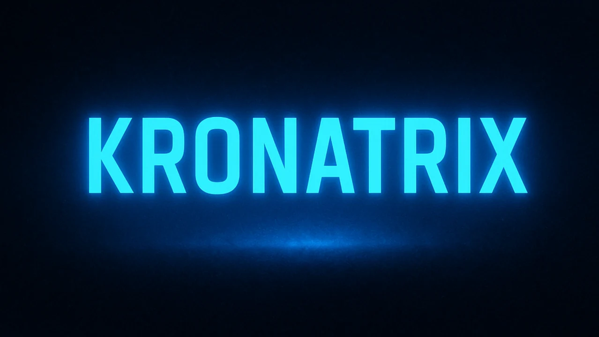
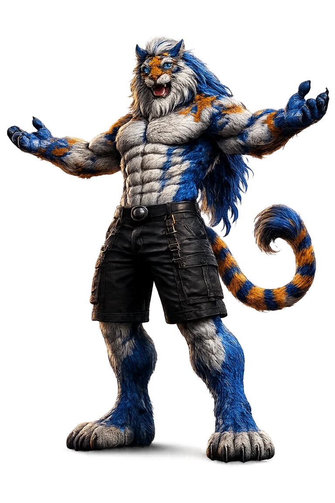

People skim less.
They want the answer faster. If your website does not explain who you help, what you do and why you are credible, you can lose the decision before they even contact you.
KRONATRIX builds fast, mobile-friendly, AI-readable websites and visibility systems that help businesses, authors and personal brands become easier to find, understand and trust on Google, ChatGPT, Gemini and AI search.
Limited weekly reviews because every business receives a personalised check.


KRONATRIX builds and improves websites so people, Google and AI assistants can quickly understand who you are, what you offer, why you can be trusted and what to do next.
People used to search, compare ten pages, ask friends, click ads and think for days. Now they ask AI for the shortlist, the explanation and the safest option. That changes attention, trust and advertising.
They want the answer faster. If your website does not explain who you help, what you do and why you are credible, you can lose the decision before they even contact you.
Beginners, buyers and busy people use AI to reduce choice. They ask who is best, what to compare and what to do next. Your online presence must make that answer easy.
Paid traffic can bring people in, but unclear pages waste attention. AI-ready structure helps your website explain the offer clearly after every click, search or recommendation.
KRONATRIX turns your website and online presence into clear signals: who you are, who you help, where you work, what you offer, why you are credible and what the visitor should do next.
Your offer is explained in plain language so a beginner, buyer, search engine and AI assistant can understand it quickly.
Your pages answer the questions people ask before they choose. This gives AI tools better material to read, summarise and compare.
Headings, metadata, internal links, FAQs, schema and service pages are organised around the way search engines understand websites.
No honest provider can guarantee rankings or AI recommendations. The smart move is to fix the signals you control before your competitors do.
KRONATRIX uses simple layouts, clear calls to action, mobile-first pages, SEO structure and AI-readable answers. These public examples show the type of clarity your online presence needs before people, Google and AI tools can trust it.

Proof-first marketing ebook site built around trust, evidence, testimonials, screenshots, reviews and a direct free-reader CTA.
VIEW LIVE SITE →
Relationship ebook promo site with cover-first design, emotional positioning, author credibility, FAQs and clear reader actions.
VIEW LIVE SITE →
Free ebook site built around momentum, discipline, chapter previews, structured answers and strong reader conversion points.
VIEW LIVE SITE →
Premium ebook promotion site focused on market value, skills, proof, income, freedom and sending visitors to the free reader.
VIEW LIVE SITE →The point: a website should not just look good. It should make the decision easier.
Pick the page that matches where you are right now. Both are simple. Both are designed for people with no AI experience.
Choose this if you are unsure whether AI or Google understands your business, website, profile, book, offer or service.
Best when you want to know where you stand first.
Choose this if you already know you want help improving your visibility, website structure, content and AI-readable trust signals.
Best when you want KRONATRIX to help fix it.
The page explains the shift. You choose the right next step. KRONATRIX reviews your real situation before giving guidance.
Choose Get Your Free AI Visibility Check if you want to see what needs fixing, or choose Get Recommended by AI & Ranked on Google if you are ready for help improving it.
We look at your website, offer, niche, location, competition, content and visibility gaps.
You receive a clear direction instead of generic pricing or a package that does not fit.
The goal is not to chase tricks. The goal is to make your brand easier to understand, compare, trust and recommend.
Visitors should know what you do, who it is for and why it matters within seconds.
Pages, headings and answers are organised so humans, Google and AI tools can follow the logic.
Visitors are sent to the right landing page instead of being left to guess what to do.
Each official page focuses on one clear need, from author websites and marketing tools to AI SEO, GEO, AEO and AI-search visibility.
KRONATRIX does not sell the same package to every business. Your price depends on what needs to change and the value better visibility could create.
Your website, message, content, competition, location and visibility gaps are reviewed first.
One extra enquiry, booking, reader, client or contract can make clear online visibility worth far more than a generic website change.
No bloated package. No random price. The work is shaped around what your business actually needs.
Start with the free check if you are unsure. Choose the main service if you are ready to improve your website, content, Google visibility and AI-readable trust signals.
For beginners who want the simple version.
Yes. KRONATRIX creates specialist resources and websites for AI SEO, Generative Engine Optimisation, Answer Engine Optimisation and AI-search visibility.
Yes. Authors by KRONATRIX creates personalised book-promotion websites that explain the author, book, reader promise and official links clearly.
KRONATRIX Marketing is the wider marketing side of the KRONATRIX network, including websites, content, marketing GPTs and resources designed to turn attention into clear next steps.
KRONATRIX AI improves website messaging, structure, content, metadata, schema, internal links and calls to action so the offer is clearer across Google and AI-assisted search.
KRONATRIX is an AI visibility and website business that builds clear, fast websites for businesses, authors and personal brands. The goal is to make each brand easier for people, Google and AI tools to understand and trust.
Because people are using AI to make decisions faster. If your business is hard to understand online, AI tools and buyers have less reason to choose you.
No. KRONATRIX focuses on making your brand clearer online so humans, Google and AI tools can understand it more easily.
Choose Get Your Free AI Visibility Check if you are unsure. Choose Get Recommended by AI & Ranked on Google if you already want help improving your website, content and visibility signals.
No honest company should guarantee that. KRONATRIX improves the controllable signals: clarity, structure, content, metadata, schema, internal links and helpful answers.
Because every project starts from a different place. Pricing is given after reviewing what is actually needed.